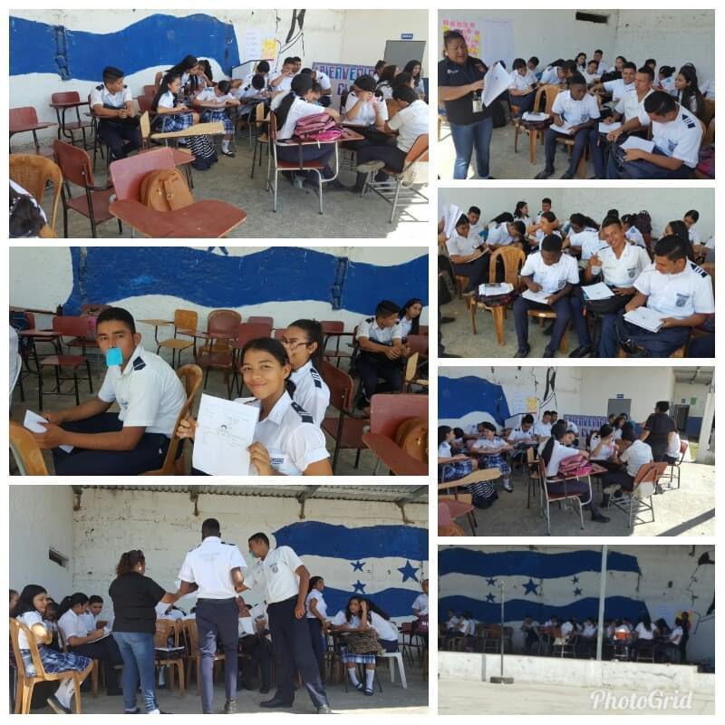

Objetivos
1.incrementar el aceso de niños y niñas en edad obligatoria para la educaion basica y media.
2. Incrementar el acceso de niños y niñas de al grado correspondiente segun la edad oportuna en las diferentes jornadas.
3. Asegurar la permanencia de niños, niñas y jovenes en el centro educativo en los niveles de basica y media.
4. Desarrollar estrategias oordinadas para disminuir los indies de reprobacion y desercion en nuestros educandos.
5. dismunir indices de migracion interna.
6. Elevar nuestros indicaores educativos.
7. Capacitar y actualizar a nuestros docentes.
8. Expandir la oferta academica en las Instituciones Gubernamentales vecinas.
9. Evaluar trimestralmente el plan remedial on el personal doente.
9. Organizar la omunidad educativa a traves de las IPCE.
11. Fortalecer la transparencia y rendicion de cuentas.
12. Consolidar la labor educativa bajo el esquema de las Redes Educativas.